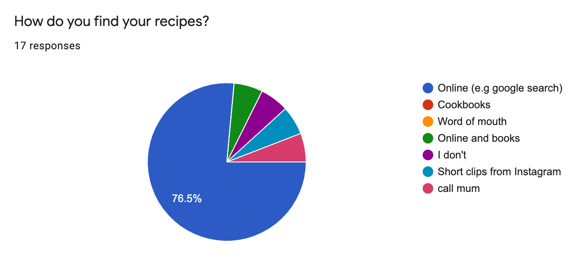

Umami - Recipes Revamped
A mobile app designed and developed from scratch
Sept 2021 - May 2022
Roles, Responsibilities & Skills
- UX researcher
- Market researcher
- UI/UX Designer
- Frontend Developer
Take a closer look
Overview
Umami is a recipe app created with the aims of providing a central platform for healthy recipes. This app incorporates features such as grocery lists and tailored recipe feeds to cater to both ingredient-driven and recipe-driven users.
Defining the Problem
| 71% of people have "gone digital" when looking for a recipe
With so many websites, cookbooks and other resources online, it can be time-consuming and tedious to find a healthy recipe that fits each person’s dietary restrictions and taste preferences.
Many apps on the market are based on sharing their own recipes, however, these platforms lack community, variety and the ability to share recipes with others.
Our Target Users + Audience:
- People who want to eat healthy
- Home Cooks & Cooking Enthusiasts
- Approximate Age Range: 15 - 50yrs
Market Research
In order to determine features that would give Umami a competitive edge in the market, we compared and identified weaknesses in recipe/food apps that were already on the market.
We found that:
- A large number of cooking/recipe apps already exist, however very few revolve around recipe sharing.
- Most apps that focus on healthy recipes have a limited database and feature only their own recipes.
- Apps that do provide a large database of recipes are often not health-oriented and don’t provide information on macros.
What Umami Brings to the Table
We wanted to create a platform that promotes healthy eating by providing users with healthy recipes (with instructions and health ratings) as well as the ability for people to upload and share their own creations.
Through extensive market research and brainstorming, we finalized some core features that would set us apart from other recipe apps.
Some features include:
- Macros: Each recipe has nutritional information displayed.
- Ingredient Tracking: You'll be able to keep track of your pantry and grocery list.
- Diverse Recipes: You'll be able to access recipes from creators and others in your network.
- Saved Recipes: Quickly save recipes for easy access later.
- Tailored User Experience: We have designed the app to accommodate recipe-driven and ingredient-driven users.
- Ability to Upload Recipes: Be able to upload and share your own recipes with your community.
- Create your own Recipes: Convert a video into our recipe format and create your own video recipes from scratch.
User Research
In order to gain more insight into the motivations behind our potential users, we sent out surveys asking both general and specific questions surrounding cooking and eating habits.
Opting for both multiple choice and open ended questions provided us with a diver set of data to analyze. We were thus able to create graphs as well as gain a more detailed insight into the pain points and motivations of various people when it comes to cooking and eating.
Some questions included:
- How do you find your recipes?
- What do you prioritize when cooking? (eg. Health vs. Time vs. Flavour)
- Do you use any food related apps? If so, what do you like and not like about them?
- What would make your cooking experience more enjoyable?
Distilling the Data
| 41.2%of people do not like cooking, while 58.8% said that they do
